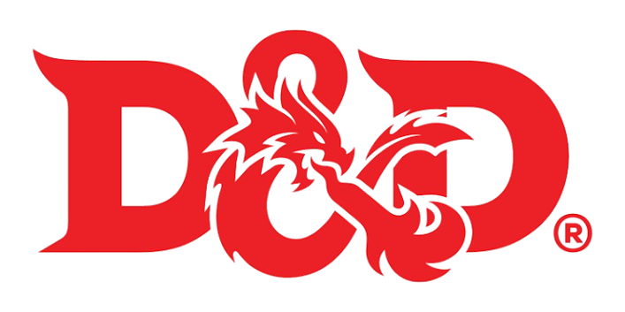

Inicio
Raças
Classes
Magias
Livros
Sobre
Saiba Tudo Sobre D&D
Aqui você vai encontrar informações sobre raças, classes, magias
e dicas para mestrar, além de fichas e livros totalmente gratuítos.
Conheça mais sobre
Oque é D&D?